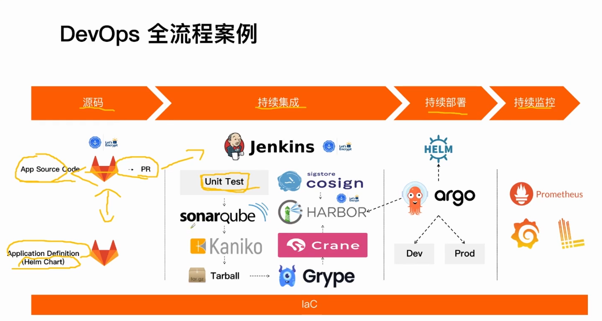

DevOps 全流程案例

- unit test 单元测试
- Pr 合并请求（pull request）
- sonarQube 代码扫描（质量门禁）
- Kaniko 构建镜像（DinD 方式不安全）
- Tarball 导出镜像tar包
- Grype 镜像安全扫描
- Crane 将Tarball 转换为标准镜像格式并推送到Harbor
- Harbor 镜像仓库
- cosign 签名，识别镜像来源，防止直接本地推送仓库（必须经过CI）
如何拉起全流程 Demo
- clone git@github.com:devops-advanced-camp/code.git
- 进入 iac/week-1/devops-overview 目录，按照 README.md 指引
- 获得运行输出
Demo
-
多环境管理和环境晋升
- Dev
- Prod
-
PR 触发流水线
-
Sonarqube 代码质量门禁
- 重复代码
-
Trigger on Image Update
-
创建一个新环境
-
开启签名校验，阻止未经签名的镜像部署
- 本地构建未签名镜像
-
开启漏洞校验，阻止包含漏洞的镜像部署
-
Grafana 面板
- K8s Dashboard
- Jenkins Dashboard
- Argo CD Dashboard
- Harbor Dashboard
- SonarQube Dashboard
-
飞书通知
IaC 云资源管理
K3s 高可用部署
使用远端 PostgreSQL 替代 SQLite 存储
避免集群工作负载过高导致 SQLite 宕机
Cloudflare 自动域名解析
SSL 证书
cert-manager 自动申请 SSL 证书
自动续期
PR 触发流水线
镜像管理
前缀 + commit id 作为镜像 tag
每个 commit 对应一个镜像
遵循“不可变制品”原则，且不使用 latest Tag 作为更新镜像的版本
Sonarqube 代码扫描和质量门禁
Sonarqube 质量门禁-重复率
camp-go-example/cmd/podinfo/main.go
copy function main and rename
更新 Dev 环境
修改 ui/vue.html#L34，构建并推送镜像，触发环境更新
配置 Hosts：ip dev.podinfo.local
强制镜像签名检查
Harbor 开启签名校验，阻止未经签名的镜像部署，推送一个未签名的镜像测试
docker pull lyzhang1999/camp-go-example:dev-no-sign
docker tag lyzhang1999/camp-go-example:dev-no-sign
harbor.wei4.gkdevopscamp.com/example/camp-go-example:dev-no-sign
docker push harbor.wei4.gkdevopscamp.com/example/camp-go-example:dev-no-sign
查看 argocd image updater 阻止部署日志，本地签名：cosign sign --key /root/cosign.key $BUILD_IMAGE
镜像漏洞扫描、阻止部署
方法 1：Harbor 开启漏洞校验，阻止包含严重漏洞的镜像部署
方法 2：Grype cli 启用扫描漏洞异常退出
grype $BUILD_IMAGE --fail-on high
修改 dev 分支 Dockerfile #23 FROM golang:1.16-alpine
应用定义-Helm
代码、镜像、环境晋升
将 dev 合并到 main 分支，演示环境晋升
查看业务日志
基于 CPU 的弹性伸缩
Grafana 面板
- K8s Dashboard
- Pods 资源用量
- 工作负载资源用量
- Jenkins Dashboard
- Argo CD Dashboard
- Harbor Dashboard
- SonarQube Dashboard
如何阅读全流程案例的源码
- k3s.tf 作为入口阅读
- init.sh.tpl 是核心逻辑